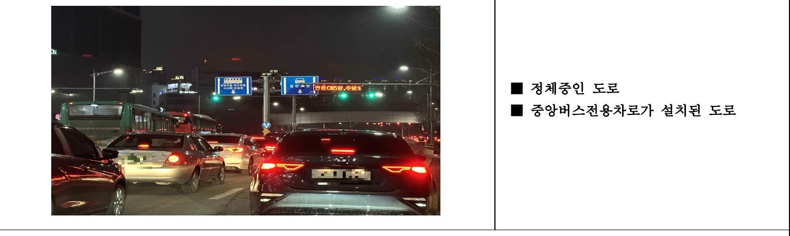

704. Hai cách lái xe nào là không đúng của mỗi người lái xe trong tình huống sau?

- ①Người đi xe đạp - Có thể vượt các xe khác ở phía mép phải của đường.
- ②Người điều khiển xe kickboard điện - Cả người lái và người đi cùng đều phải đội mũ bảo hiểm khi đi xe.
- ③Người điều khiển xe hai bánh - Có thể lái xe vào làn đường dành riêng cho xe buýt ở trung tâm để tránh ùn tắc.
- ④Người lái xe ô tô con - Lái xe chú ý tránh va chạm do ùn tắc giao thông.
- ⑤Người lái xe buýt - Khi đang lái xe trên làn đường không phải làn đường dành riêng, phải tuân theo tín hiệu từ đèn giao thông dành cho tất cả các xe chứ không phải đèn giao thông dành cho xe buýt ở trung tâm.
Xem đáp án
Đáp án
② Người điều khiển xe kickboard điện - Cả người lái và người đi cùng đều phải đội mũ bảo hiểm khi đi xe.
③ Người điều khiển xe hai bánh - Có thể lái xe vào làn đường dành riêng cho xe buýt ở trung tâm để tránh ùn tắc.
Căn cứ
Số lượng hành khách tối đa trên một chiếc kickboard điện là một người (Điều 33-3 của Quy tắc thi hành Luật Giao thông đường bộ). Xe không được phép đi trên làn đường dành riêng thì không được đi trên làn đường dành riêng (Điều 15, Khoản 3 Luật Giao thông đường bộ).
Phần căn cứ là bản dịch máy để tham khảo.